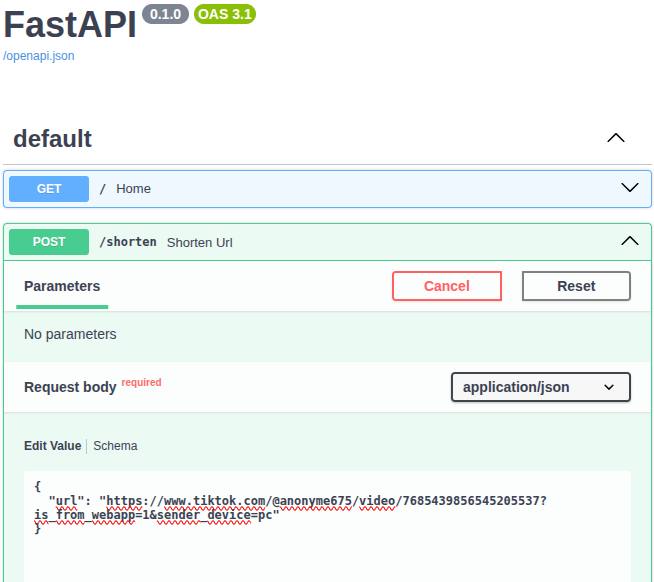
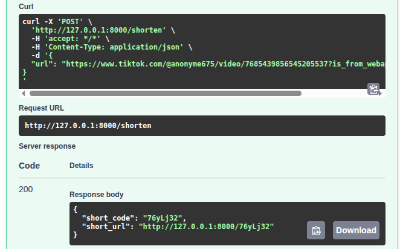

Petite API permettant de raccourcir des URLs grâce à FastAPI et SQLite. L'application fonctionne en local et génère un code court permettant ensuite de rediriger vers l'URL originale.
Ce projet consiste à créer une petite API de raccourcissement d'URL. L'utilisateur envoie une URL à l'API et celle-ci génère un code court. Ce code peut ensuite être utilisé pour retrouver l'URL originale et effectuer une redirection.
POST /shorten reçoit une URL au
format JSON et génère automatiquement un code court.
urls.db.
GET /{short_code} permet d'utiliser
le code court pour rediriger vers l'URL d'origine.
POST /shorten
Permet de créer une URL raccourcie.
GET /{short_code}
Utilise le code court pour retrouver l'URL originale.
Ce projet m'a permis de découvrir la création d'une API avec FastAPI, la réception de données JSON avec Pydantic, la création d'endpoints HTTP et l'utilisation de SQLite pour stocker les données. J'ai également appris à lancer une application FastAPI avec Uvicorn et à tester les requêtes directement depuis la documentation interactive.
1. Documentation de l'API :
FastAPI génère automatiquement une interface Swagger.
Elle permet de visualiser l'endpoint POST /shorten
et de fournir une URL au format JSON.

2. Test de la requête :
une requête POST est envoyée vers
http://127.0.0.1:8000/shorten.
Le serveur retourne un code court ainsi que l'URL raccourcie.

Résultat :
l'API retourne une réponse JSON contenant le
short_code et le short_url.
Dans l'exemple testé, le code généré est
76ylJ32.